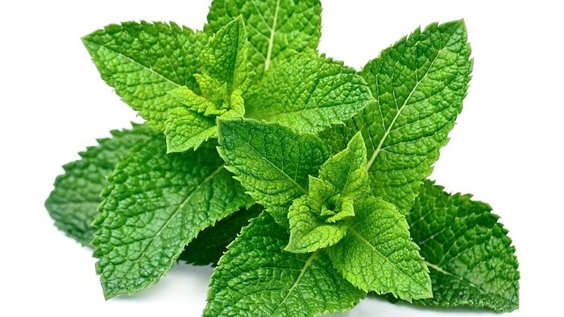

Berita Kesehatan
Sudah Sejauh Mana Persiapan Vaksinasi COVID-19 di Indonesia? Ini Kata Satgas
Jakarta - Prof Wiku Adisasmito selaku Juru Bicara Satgas Penanganan COVID-19 menjelaskan terkait kesiapan vaksinasi di Indonesia. Dalam pemaparannya, saat ini konteks vaksinasi di 34 provinsi Indonesia pengembangannya sudah sesuai dengan roadmap yang disusun Kementerian Kesehatan RI. "Persiapan vaksinasi ini mempertimbangkan berbagai aspek, termasuk logistik termasuk kesiapan sumber daya manusianya," jelas Prof Wiku dalam siaran pers di kanal Youtube BNPB, Kamis (29/10/2020). "Dan berdasarkan data dari Kemenkes secara logistik, kesiapan prosedur untuk menjaga suhu vaksin dengan tujuan untuk menjaga kualitas dan efektivitasnya sudah berjalan dengan baik," lanjutnya. Prof Wiku menjelaskan saat ini rata-rata suhu vaksin yang berfungsi di Indonesia mencapai 97 persen. Sedangkan untuk SDM, baik dari tenaga kesehatan seperti dokter umum, dokter spesialis, perawat, dan bidan, sudah disiapkan sebanyak rata-rata sebanyak 739.722 orang. Selain itu, tenaga kesehatan lain yaitu vaksinator juga mulai disediakan di puskesmas maupun rumah sakit sebanyak 23.145. Dengan persiapan seperti ini, vaksinasi bisa berjalan aman dan sukses. "Kami percaya, vaksinasi yang sukses adalah yang aman, efektif. Kami juga berharap masyarakat bisa sabar untuk menanti vaksinasi dengan sabar dan tetap mematuhi protokol kesehatan," kata Prof Wiku," ujarnya.
Sudah Sejauh Mana Persiapan Vaksinasi COVID-19 di Indonesia? Ini Kata Satgas
Jakarta - Kaum milenial pasti sangat akrab dengan kata bergadang. Di usia yang terbilang muda, tubuh memang tidak mudah protes jika harus diajak bergadang untuk menyelesaikan pekerjaan atau tugas-tugas perkuliahan Namun, tak sedikit pula yang hobi bergadang hanya untuk melakukan hal-hal yang kurang bermanfaat seperti main game atau nonton drama korea. Hayo ngaku, pasti banyak kan?
Padahal bergadang memiliki efek yang buruk bagi kesehatan, terutama kesehatan jantung. Dalam sebuah penelitian yang dilakukan oleh para ilmuwan dari National Institute for Public Health and the Environment di Belanda menemukan manfaat dari tidur malam bagi kesehatan kardiovaskular.
Hanya dengan tidur malam yang cukup, sekitar 8 jam setiap malam, risiko cardiovascular disease (CVD) termasuk di dalamnya penyakit jantung koroner turun lagi sebanyak 8 persen. Risiko kematiannya juga turun sebanyak 16 persen
Jika dibarengi dengan 4 gaya hidup sehat yang lain seperti olahraga teratur, diet sehat, mengurangi alkohol, dan tidak merokok, maka risiko CVD turun lagi menjadi 65 persen dan risiko kematian yang menyertainya juga turun lagi menjadi 83 persen. Dokter, presenter, sekaligus relawan COVID-19 dr. Vito Damay juga mengatakan bergadang bisa memicu hormon stres yang membuat detak jantung makin kencang dan tekanan darah menjadi tinggi.
Selain itu, Dokter Spesialis Gizi Klinik dr. Cindiawaty Pudjiadi juga mengatakan bergadang membuat orang-orang yang melakukannya cenderung kacau dalam memilih makanan. Sebab, lanjutnya, di malam hari makanan yang tersisa biasanya makanan yang kurang sehat seperti mie instan, gorengan, dan camilan-camilan yang tinggi kolesterol. Kolesterol inilah yang menjadi salah satu faktor meningkatnya risiko penyakit jantung koroner.
Oleh karena itu, agar terhindar dari efek buruknya, kurangi bergadang. Tidur malam yang cukup bisa membuat badan lebih segar dan sehat. Tak hanya istirahat cukup, kamu juga harus menyeimbanginya dengan makan makanan bergizi dan kaya serat seperti buah dan sayur serta rutin berolahraga.
7 Manfaat Daun Mint yang Nggak Disangka

Jakarta - Selama ini, kamu mengenal daun mint dengan wanginya yang khas. Daun mint juga dipakai untuk penambah nikmat rasa teh atau infused water sampai ke produk perawatan tubuh.
Daun mint adalah nama untuk lebih dari selusin spesies tumbuhan, termasuk peppermint dan spearmint, yang termasuk dalam genus Mentha. Tanaman ini sangat dikenal karena sensasi dinginnya yang menyegarkan.
BERIKUT ADALAH MANFAAT DAUN MINT BAGI KESEHATAN
1. Kaya Nutrisi
Meskipun biasanya tidak dikonsumsi dalam jumlah banyak, daun mint mengandung cukup banyak nutrisi.
Faktanya, di bawah 1/3 cangkir atau setengah ons (14 gram) spearmint mengandung (1):
-Kalori: 6
-Serat: 1 gram
-Vitamin A: 12% dari RDI atau referensi asupan harian
-Besi: 9% dari RDI
-Mangan: 8% dari RDI
-Folat: 4% dari RDI
Mint adalah sumber vitamin A yang sangat baik, vitamin yang larut dalam lemak yang sangat penting untuk kesehatan mata dan penglihatan malam hari.
Daun ini juga merupakan sumber antioksidan yang kuat, terutama jika dibandingkan dengan bumbu dan rempah lainnya. Antioksidan membantu melindungi tubuh Anda dari stres oksidatif, sejenis kerusakan sel yang disebabkan oleh radikal bebas.
2. Lancarkan Saluran Pencernaan
Irritable bowel syndrome (IBS) adalah gangguan saluran pencernaan yang umum. Biasanya ditandai dengan gejala pencernaan seperti sakit perut, gas, kembung, dan perubahan kebiasaan buang air besar.
Meskipun pengobatan untuk IBS sering kali mencakup perubahan pola makan dan minum obat, penelitian menunjukkan bahwa mengonsumsi minyak peppermint sebagai obat herbal juga dapat membantu.
Minyak peppermint mengandung senyawa yang disebut mentol. Senyawa ini bisa membantu meringankan gejala IBS dengan memberikan efek relaksasi pada otot saluran pencernaan.
Sebuah tinjauan terhadap sembilan penelitian termasuk lebih dari 700 pasien dengan IBS menemukan bahwa mengonsumsi kapsul minyak peppermint memperbaiki gejala IBS secara signifikan lebih dari kapsul plasebo.
Satu studi menemukan bahwa 75% pasien yang mengonsumsi minyak peppermint selama empat minggu menunjukkan perbaikan gejala IBS, dibandingkan dengan 38% pasien dalam kelompok plasebo.
Khususnya, hampir semua penelitian yang menunjukkan pereda gejala IBS menggunakan kapsul minyak daripada daun mint mentah.